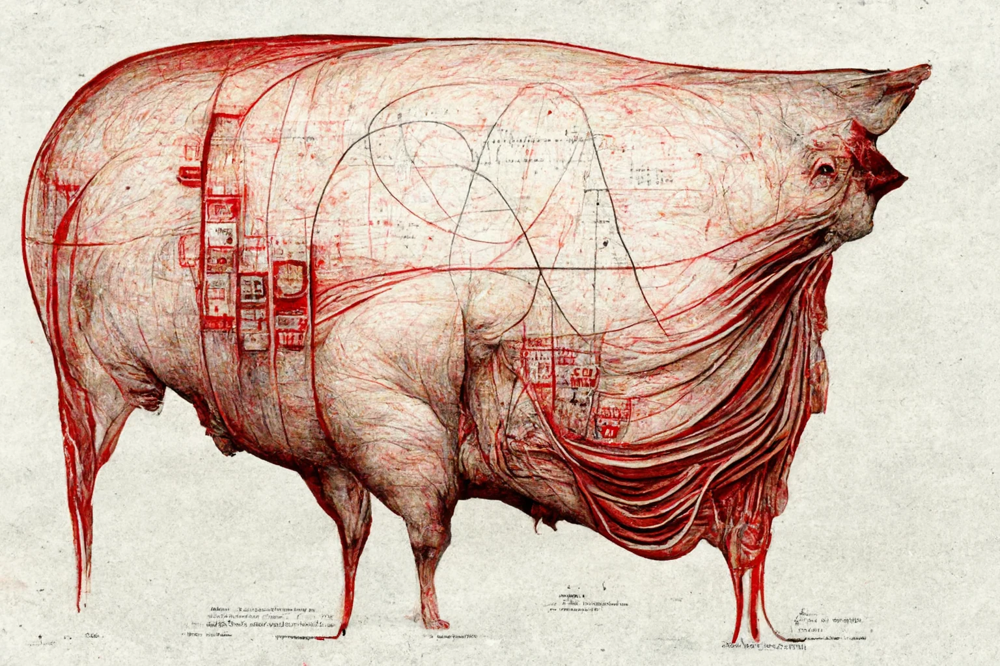
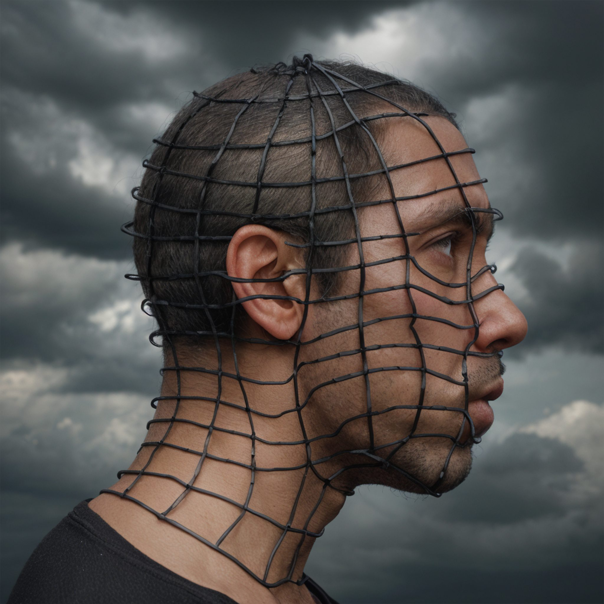
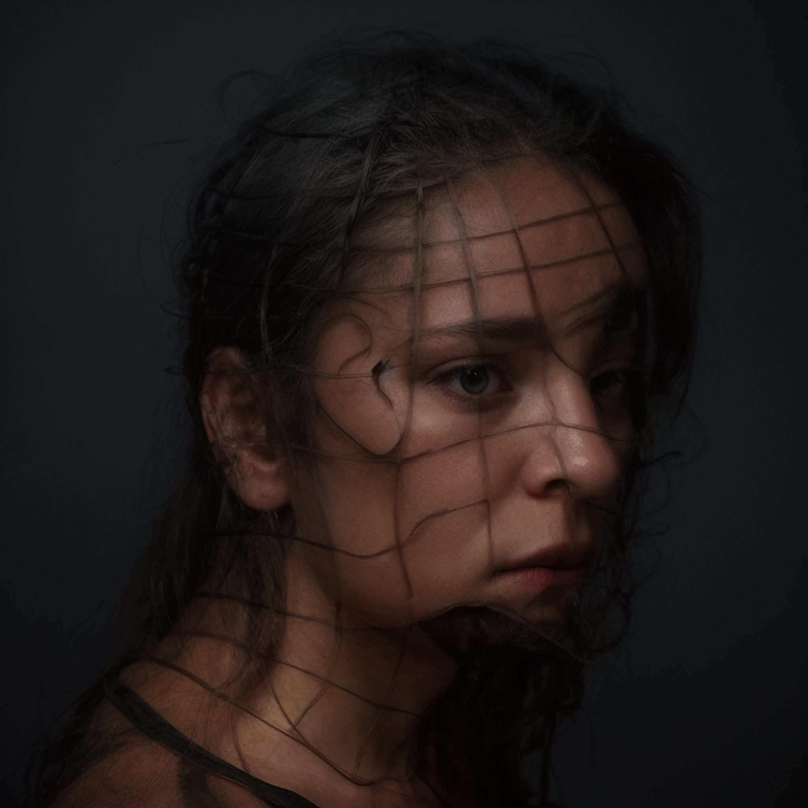
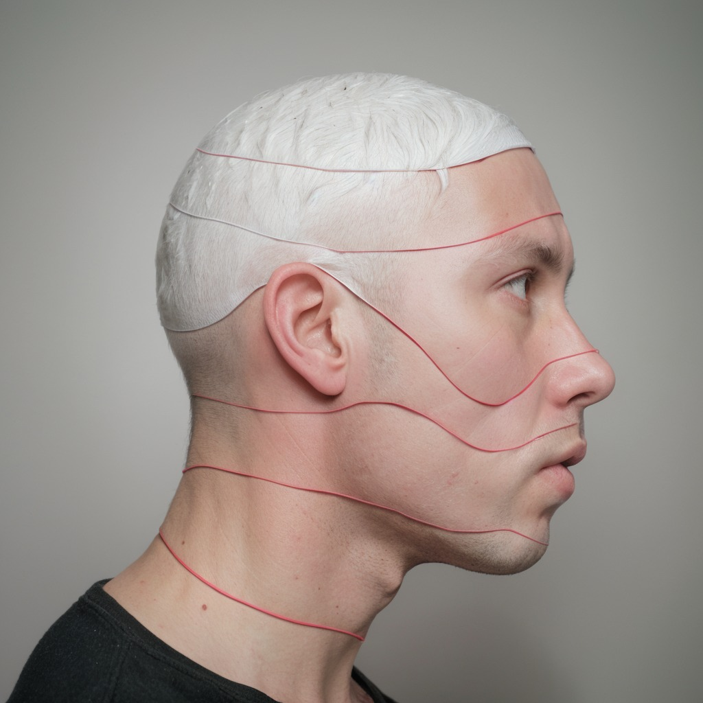
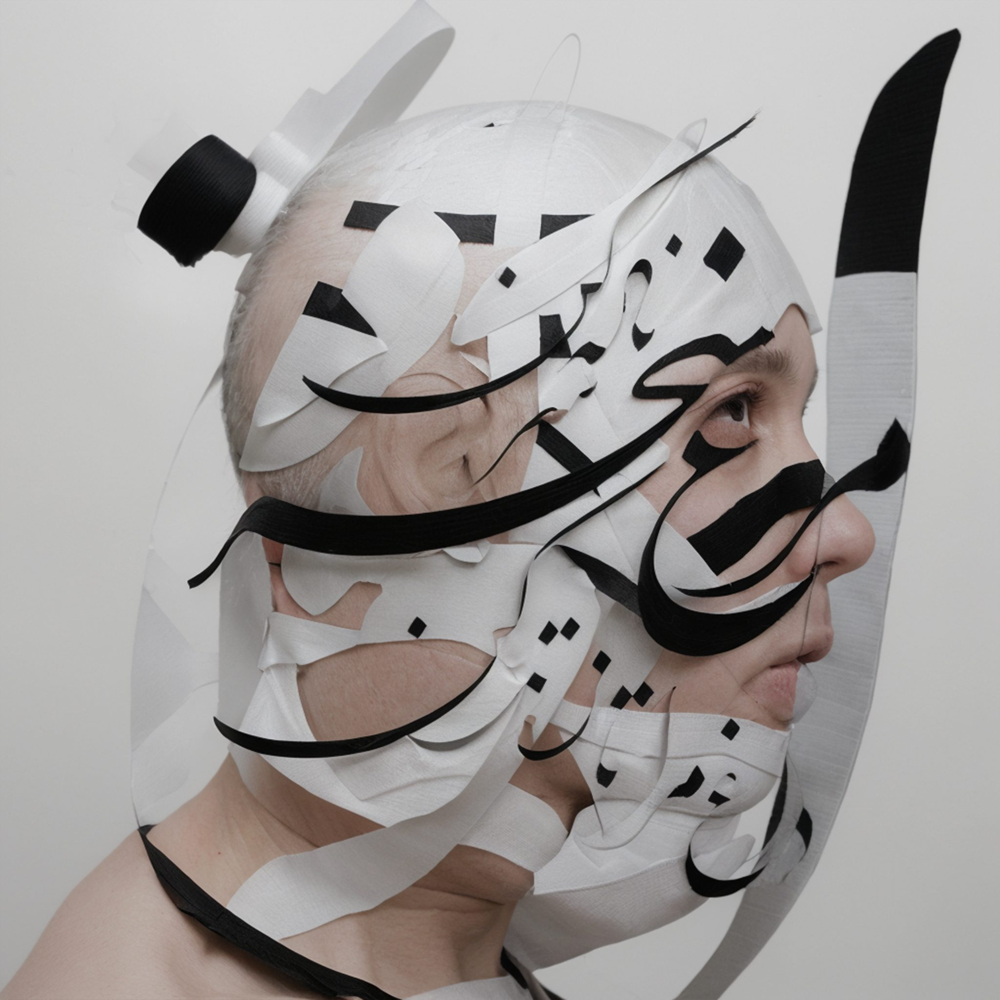

Works
An index of photographs, reconstructed bodies, machine images, spatial captures, and visual experiments.
 Portraits
Portraits
 Head Study
Head Study
 Untitled Portrait
Untitled Portrait

The Animal Machine Documentary
Documentary
 Walls I
Walls I
 False Restorations
False Restorations
 Portrait Archive
Portrait Archive
 Walls II
Walls II
 Black Out
Black Out
 Observed Lives
Observed Lives
 Portrait X
Portrait X
 Archival Room
Archival Room
 Walls V
Walls V
 Self Portrait Scan
Self Portrait Scan
 Maria
Maria
 Documentary XII
Documentary XII
 Woman by Window
Woman by Window
 Portrait XI
Portrait XI
 Documentary IV
Documentary IV
 Walls III
Walls III
 Figures and Black Cat
Figures and Black Cat
 Portrait XII
Portrait XII
 Documentary VIII
Documentary VIII
 Walls IV
Walls IV
 Portrait by Window
Portrait by Window
 Portrait XIII
Portrait XIII
 Documentary XIV
Documentary XIV
 Walls VI
Walls VI
 Portrait XIV
Portrait XIV
 Figure and Painting
Figure and Painting

Wire Grid
Line Map
Contour Profile Folded Shell
Folded Shell

Script Mask Head Study II
Head Study II
 Displacement Map
Displacement Map
 Brambles
Brambles
 Oh Me
Oh Me
 Documentary V
Documentary V
 Documentary VII
Documentary VII
 Documentary IX
Documentary IX
 Documentary XI
Documentary XI
 Portrait XVI
Portrait XVI
 Portrait XVII
Portrait XVII
 Afshin
Afshin